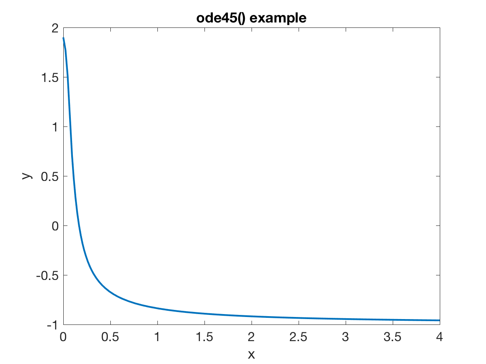

Takeaways
- We always consider an ODE \(y' = f(x,y)\) (just like in existence and uniqueness) since this is the most generalized kind of ODE
- The forward Euler step equation is: \[ y_{i+1} = y_i + h f(x_i, y_i)\]
- The backward Euler step equation is: \[ y_{i+1} = y_i + h f(x_{i+1},y_{i+1}) \]
- Both methods are locally second order accurate and globally first order accurate
- Backward Euler is unconditionally stable
- Forward Euler has a maximum step size: \[ h_{\max} = \frac{2}{|\lambda|} \] when applied to the canonical equation \(y' = \lambda y\).
Overview
As I’m sure is becoming apparent to you, solving ODEs is hard. Even for the (relatively) simple equations we’ve considered thus far, it can be very difficult to find the right trick to transform an ODE so that it can be solved in closed form. The real world is not nearly as forgiving: nearly all phenomena in the world are nonlinear to some degree, causing the underlying ODEs to be nonlinear and therefore difficult or impossible to solve analytically. Furthermore, we may wish to model the system evolution with parameters that vary greatly across the domain (e.g. the density of air as an object falls from space) or even random (e.g. permeability of a subterranean rock body). These types of phenomena can almost never be modeled with a closed form function and solved analytically. Alas, where shall we turn? The answer is numerical solutions of differential equations.
Up until now, we’ve focused on analytical solutions of ODEs, but a good portion of the remainder of this class will be focused on numerical solutions of ODEs. Numerical solutions are essential to working with differential equations for the simple fact that most differential equations—especially those of real-world relevance—cannot be solved by hand. Numerical methods and numerical analysis is a fascinating area of mathematics, and I hope that by the end of these notes (or at least the end of this class) you will also appreciate just how important this field is, and hopefully find it as beautiful and fascinating as I do.
What is a Numerical Method?
Before we dive into particular algorithms, it’s helpful to understand on a very high level what a numerical method actually is. In one sentence, a numerical method (or numerical scheme) is an algorithm that solves for an approximate solution to the ODE at discrete points. Our analytical solutions are defined for all \(x\) over the domain of interest: we are finding the solution for an infinite number \(x\) values. In a numerical solution however, we are only finding the solution at a finite number \(x\)’s. Because our solution is only at a few points, there will naturally be some error involved, hence why the numerical solution is only approximate.
The relevant questions for a numerial scheme are:
- How much error is involved in the solution, and how does it change with our step size (the spaces between the points where we find the numerical solution)?
- How large or small can a step size be for a numerical solution to exist?
Note that both of these questions (and especially the second) are predicated on there actually being a solution in the first place. This is why we teach the existence and uniqueness theorems: you can never expect to solve an ODE numerically if the solution does not even exist in theory.
Below, we discuss each of these questions, address them for two of the most basic numerical methods, then implement a numerical solution with MATLAB’s popular ode45() function.
Accuracy
Perhaps the most important part of a numerical scheme is how well it approximates the analytical solution: any numerical method for which you cannot analyze and predict the accuracy is functionally useless. Specifically, we are talking about measuring the difference between \(y_{i+1}\) (the numerical solution) and \(y(x_{i+1})\) (the analytical solution evaluated at the \(x\) value corresponding to the numerical solution).
We express accuracy with what is known as “Big-O” notation. Big-O notation is a way of expression what order something is in terms of a variable (the “O” stands for order). You may have seen this type of notation in the context of computer algorithms. By order, we mean the highest power a variable is raised to, (This is different from order when we characterize a differential equation.) For an example, suppose we have:
\[f(x,y) = 10x^3y\]In this case \(f(x,y)\) is third order in \(x\) and first order in \(y\), so we denote it as \(\mathcal{O}(x^3y)\). Notice that we get rid of the constant, and only write out the power. This kind of analysis is very important when measuring error, since in this class we are just interested in how the error changes with respect to the step size, not necessarily the constant in front of the error.
When we’re analyzing error, we’re also interested in two types of error: local error, and global error. Local error is how much error we incur by progressing a single step forward, whereas global error is the total amount of error we’ve incurred over the entire domain. These two types of errors are closely related, but they are distinct so be sure not to confuse them as we move on with these notes.
As a last point on accuracy, when we refer to a method as being a certain order of accuracy (“Forward Euler is a first order accurate method”), this is made in reference to the global error, not the local error. This is a bit of confusing terminology, so I want to emphasize it from the beginning.
Stability
Another very important concept in numerical analysis is the stability of a numerical method. When solving an ODE, we do not want to take too large of a step size since besides the accuracy deteriorating, we can actually have a solution that diverges i.e. the solution “blows up” when we run the code.
Our numerical methods in many ways boil down to a map from one point \(y_i\) to the next point \(y_{i+1}\). To rigorously characterize when a solution might blow up, we derive an amplification factor for a numerical scheme, denoted as \(\sigma(h)\). The amplification factor is essentially how much the solution grows from step to step as a function of the step size we’re taking between steps. For a given numerical, we can find the amplification factor by algebraically rearranging it to be in the form :
\[y_{i+1} = \sigma(h) y_i\]To do this, we use the characteristic ODE \(y' = \lambda y\). (Here we are assuming that the solution itself is stable i.e. \(\lambda < 0\), since otherwise the solution would blow up as \(x\) goes to infinity.)
Below, we’ll work through accuracy and stability analysis for two numerical schemes: forward and backward Euler.
The Basics: Forward Euler
Forward Euler is the most basic numerical method and the building block of all other numerical methods, and forms the backbone of many industry-scale numerical packages even today. For example, in fluid dynamics forward Euler is still very commonly used simply because it is easy to implement and very fast compared to other methods (e.g. backward Euler, which we cover below).
The basic equation for forward Euler is:
\[y_{i+1} = y_i + h f(x_i, y_i)\]First and foremost, forward Euler is known as an explicit scheme because we everything on the right hand side is known i.e. we have a closed form for \(y_{i+1}\). This is in comparison to implicit methods such as backward Euler, where an unknown value like \(y_{i+1}\) might appear on the right hand side.
Numerical methods are, for the purposes of this class, divided into explicit and implicit schemes. An explicit scheme is one where at step \(i\), we have all the information we need to solve for step \(i + 1\). Explicit schemes mathematically are nice because we have a closed form (i.e. “plug and chug”) way to calculate \(y_{i+1} \), as opposed to an implicit scheme where I will need to solve some sort of ugly equation to find the next step. We have a lot of very nice “black box” solvers using explicit methods (ode45() in MATLAB is a very nice one you will work with a lot this quarter and we discuss below).
Let’s analyze the accuracy of this scheme. To do this, start with the analytical solution \(y(x_{i+1})\) and take the Taylor expansion about \(y(x_i)\):
\[\begin{gather} y(x_{i+1}) = y(x_i + h) = y(x_i) + h y' + \frac{h^2}{2} y'' + \frac{h^3}{6}y''' + \cdots \end{gather}\]To calculate the local error for forward Euler, we subtract the forward Euler approximation \(y_{i+1}\) from the Taylor expansion of the analytical solution to find the order of the leading error term:
\[\begin{align} Error &= y(x_{i+1}) - y_{i+1} \\ &= y(x_i) + h y' + \frac{h^2}{2} y'' + \cdots - (y_i + hy') \\ &= \frac{h^2}{2} y'' + \cdots \\ &= \mathcal{O}(h^2) \end{align}\]There are a couple assumptions implicit in this. First, we’re assuming that \(y_i = y(x_i)\), since we’re really interested in the error that we incur at each step, or the local error. Secondly, we’re assuming that \(h<1\). This assumption is made becaue in reality, \(h\) is going to be some fraction of our domain, and therefore is \(<1\). This may seem a bit hand-wavy, but in reality this is also the only way we can really do meaningful analysis on numerical schemes.
When we say the leading error term, we mean the error term that contains the lowest power of \(h\). \(h<1\) implies that higher powers of \(h\) are smaller than the lower powers, so when analyzing the error, most of the error is coming from the power of \(h\) raised to the lowest power. For this reason, we say that the local error of forward Euler is \(\mathcal{O}(h^2)\).
After finding the local error, we want to find the global error. To do this, we simply multiply the local error by \(N\), the number of steps we take. However, notice that we have the relation:
\[h = \frac{x_f - x_0}{N} \implies N = \mathcal{O}(h^{-1})\]When multiplying two quantities together that are expressed in big-O notation, we just multiply the powers together. Therefore, \(N \times \mathcal{O}(h^2) = \mathcal{O}(h)\), so forward Euler is a globally first order accurate scheme.
Next, we want to derive what is the maximum step size we can take. To do this, we work with the model ODE \(y' = \lambda y\) (with \(\lambda < 0\)). This ODE has many very nice properties. In particular though, we have for the \(n^{th}\) derivative: \(y^{(n)} =\lambda^n y\). (If this is not clear, work this out for yourself.) Because of this property, it is extremely easy to derive stability and even accuracy results for numerical schemes.
To find the amplification factor, we simply plug the model ODE into our numerical scheme and step through it until we have a relation of the form \(y_{i+1} = \sigma(h) y_i\). For forward Euler, this is pretty straightforward:
\[\begin{align} y_{i+1} &= y_i + h y' \\ &= y_i + h \lambda y_i \\ &= (1 + h\lambda) y_i\\ \sigma(h) &= 1 + h\lambda \end{align}\]To keep our numerical solution from “blowing up”, we require that \(\lvert\sigma(h)\rvert < 1\) (so when we raise sigma to a high power, it decays to zero instead of going to infinity). We can use this condition to derive the maximum step size:
\[\begin{align} |\sigma| &< 1\\ 1 + h \lambda &< 1\\ h \lambda &< 0\\ h &> 0, \qquad (\lambda < 0\; \text{for stable ODEs})\\ 1 + h\lambda &> -1 \\ h \lambda &> -2 \\ h &< \frac{2}{|\lambda|} \end{align}\]So, we have found the maximum allowable step size for this method. Note that we assume \(\lambda < 0\). This is because the analytical solution would blow up for \(\lambda>0\), and we can never hope to have a numerical method that doesn’t blow up when the solution itself blows up. When you perform this analysis with the model equation, always assume \(\lambda < 0\).
Backward Euler
A similar but slightly more complicated method is the backward Euler method. The step equation for backward Euler is:
\[y_{i+1} = y_i + h f(x_{i+1}, y_{i+1})\]Notice the difference between this and forward Euler: here, we are using the function values/information at the next time step (\(i+1\)) to approximate the derivative instead of the values at the current time step. This is known as an implicit method, since \(y_{i+1}\) is given implicitly in the equation. (That is, we cannot simply plug in a few values and calculate \(y_{i+1}\), we instead will usually need to solve some sort of nonlinear equation.)
To analyze the accuracy of this method, we actually turn to the model ODE. When analyzing accuracy, it is often much easier and in a lot of cases only possible to do so using the model ODE. Basically, we first derive the amplification factor, then we compare the Taylor expansion of the amplification factor to the Taylor expansion of the analytical solution to see for which terms they differ.
We first need to plug the model ODE into our equation:
\[y_{i+1} = y_i + h \lambda y_{i+1}\]From here, we solve out for \(y_{i+1}\):
\[y_{i+1} = \frac{1}{1 - h \lambda} y_{i}\]We now need to take the Taylor expansion of the amplification factor:
\[\frac{1}{1 - h \lambda} = 1 + h\lambda + h^2 \lambda^2 + h^3\lambda^3 + \cdots\]Now, recall the Taylor expansion for the analytical solution:
\[\begin{align} y(x_{i+1}) &= y(x_i) + h y' + \frac{h^2}{2} y'' + \frac{h^3}{6}y''' + \cdots \\ &= (1 + h\lambda + \frac{h^2\lambda^2}{2} + \frac{h^3 \lambda^3}{6} + \cdots) y_i \end{align}\]When we subtract the numerical from the analytical solution, the difference will be the differences in the amplification factors (convince yourself of this before proceeding). Here, the amplification factors match up to the \(\mathcal{O}(h^2)\) term, so the local error for backward Euler is \(\mathcal{O}(h^2)\). To find the global error, we simply lower the local error by one power of \(h\) (equivalent to multiplying by \(\mathcal{O}(h^{-1})\)). Global error is then \(\mathcal{O}(h)\), and backward Euler is a first order accurate scheme.
Finally, for stability, note that because \(\lambda < 0\), \(1 - h \lambda > 1\), so the amplification factor \(\lvert\sigma\rvert < 1\) for all \(h\) in the backward Euler scheme. So, all step sizes are stable, and backward Euler is known as an unconditionally stable numerical scheme.
As a note about unconditionally stable schemes: even if a scheme is stable, it doesn’t mean it’s accurate. Backward Euler being unconditionally stable just guarantees it doesn’t blow up for a large step, but we’re still incurring first order errors. This is something to be aware of when computing numerical solutions.
ode45() in MATLAB
The last important thing we need to talk about here is using “black box” numerical ODE solvers. In reality, you will almost never write your own code to solve differential equations numerically. Instead, you will use some sort of “black box” solver, where you feed the subroutine your problem, initial conditions, and a few other pieces of information, and the solver finds the solution for you. We use outside code to do things like solve ODEs since the outside package has been refined for many years and contains many more features than you yourself could realistically implement for your own problem in a reasonable amount of time.
In MATLAB, the main workhorse for solving ODEs numerically is ode45(). ode45() is known as an adaptive step size ODE solver, because it contains subroutines that check to see if we need to make the step size smaller or larger based on the characteristics of the ODE. ode45() has “45” in the name because its main numerical scheme is fourth-order accurate, and it uses a fifth order scheme to occasionally check that the fourth order scheme is accurate enough. (4 and 5, get it?) If the fifth-order scheme detects too much error from the fourth order scheme, it shrinks the step size, and if the fourth order scheme is achieving extremely high accuracy, it will make the step size larger to speed up the computation.
If you are working with ODEs, it is absolutely critical that you learn how to numerically solve ODEs with ode45(), and in general solve with pre-exiting code. To do this, let’s go through an example of implementing an ODE. Consider the ODE from the equilibria and stability notes:
We can solve this ODE numerically using the code below:
clear all, close all
yp = @(x,y) (y - 2)*(y+1)^2*(y+3); % Anonymous function for y'
[x, y] = ode45( @(x,y) yp(x,y), [0,4], 1.9);
plot(x,y)Before we show the solution, let’s first talk about the implementation details, since there are a few important things in this snippet of code. The first is the anonymous function for \(y'\). In MATLAB, not all functions need to be stored in separate files. Especially if we’re dealing with really short functions (like evaluating a derivative), we can implement it as a one-line function known as an anonymous function. (I don’t know where the name comes from, but perhaps someone smarter than me knows.)
The basic syntax for an anonymous function is name = @(arguments) expression;. You need to put an “@” symbol in front of the arguments in parentheses so MATLAB knows what you’re passing into the function. From there, you write out the function in terms of the arguments like you would a regular function in MATLAB.
Next, we need to discuss the syntax of ode45(). The syntax is:
[domain, range] = ode45(@(x,y) YPrime(x,y), [Domain Span], [Initial Condition(s)])
ode45() will output two vectors: the numerical solution (range), and the points where the solution was evaluated (domain). We then need to have a function to evaluate \(y'\) that takes the independent variable and the function value as inputs. The most important thing to note about YPrime(x,y) is that MATLAB only expects your derivative function to take two inputs. You need to write your derivative function such that it only has two inputs or ode45() will not work.
Finally, we have [Domain Span], which is an array containing two elements that tell ode45() the range over which to solve the ODE, and [Initial Condition(s)], which is an array containing all of the initial conditions for the ODE. Here, we are only solving for \(y\), so we have only one initial condition. When we solve a system of ODEs (as we’ll do in the next set of numerical methods notes), the initial conditions will be a vector containing the initial condition for every variable we’re solving for.
Now that we’ve discussed the implementation in gory detail, we can show the resulting numerical solution:

More importantly though, let’s also take a look at the step sizes that ode45() uses:
Notice how the step sizes are small when \(y(x)\) is changing rapidly, but large when it is changing slowly? This is the advantage of using an adaptive step size solver. Evaluating the function’s derivatives can be extremely expensive, so we want to minimize how many times we do it. When the function is changing slowly, its derivatives (and therefore the errror terms) are quite small, meaning we can take larger step sizes and make less function evaluations while still have the same amount of error.
Key Terms
Numerical methods are almost as much a matter of vocabulary as they are of mathematics: if you do not know what property of a scheme a question is refering to, it’s impossible to know how to work with it. To close this section of notes, I want to list some of the key terms for you to know. You should reference this section often until you have these memorized.
- Explicit scheme: numerical scheme where the next step \(y_{i+1}\) is only dependent on previous \(x\) and \(y\) values. For now, we mean that \(y_{i+1}\) is dependent only on \(x_i\) and \(y_i\), although later on we will discuss multi-step schemes, where \(y_{i+1}\) is dependent on many previous steps
- Forward Euler: the most basic explicit scheme, defined as \(y_{i+1} = y_i + f(x_i,y_i)\)
- Implicit scheme: numerical scheme where the next step \(y_{i+1}\) is dependent on itself and previous \(x\) and \(y\) values.
- Backward Euler: the most basic implicit scheme, defined as \(y_{i+1} = y_i + f(x_{i+1},y_{i+1})\)
- Step size: the spacing in \(x\) values we use to estimate \(y\). Usually denoted as \(h\).
- Constant step size scheme: where \(h\) is constant across the entire domain. More mathematically, we have \(h = x_{i+1} - x_i\) for all \(i\)
- Adapative step size scheme: where \(h\) varies across the domain.
ode45()belongs to this category of solvers ode45(): an adaptive step “black box” ODE solver available in MATLAB
- Stability: analysis that determines under which conditions, if any, the solution diverges. This is a numerical effect different from the accuracy.
- Model Equation: the ODE \(y' = \lambda y\) with \(\lambda < 0\)
- Conditionally stable: scheme that will not diverge as long as the step size satisfies some conditions
- Unconditionally stable: a scheme that is stable for all step sizes
- Amplification factor: how much a solution grows for each step, written as \(y_{i+1} = \sigma(h) y_i\)
- Accuracy: how well the numerical solution approximates the analytical solution
- Local error: difference between the numerical and analytical solutions at a single time step
- Global error: total error over the entire domain for all steps